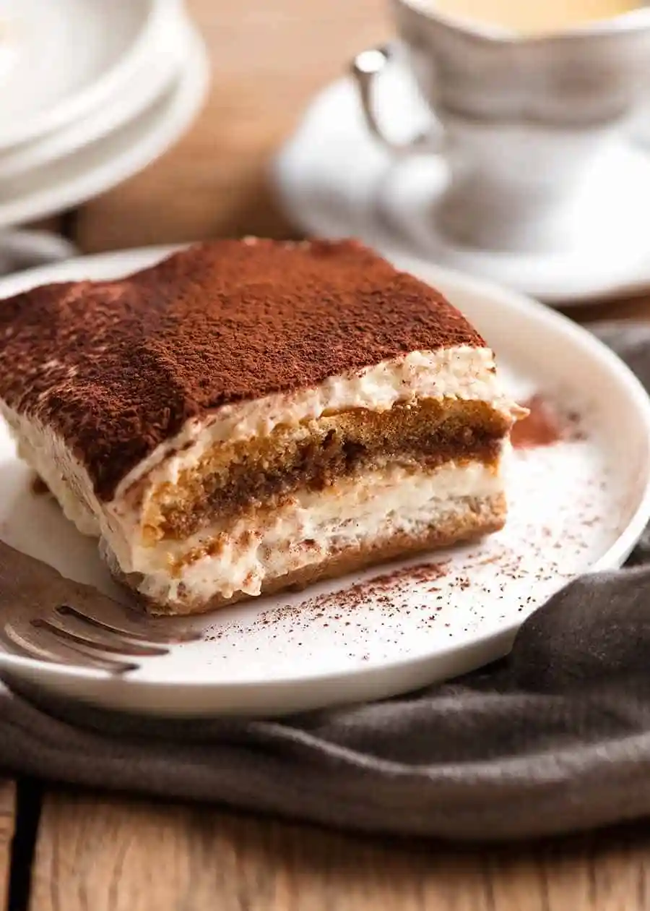

Tiramisù Recipe

Description
Tiramisù is the evergreen desserts that everybody likes. There are countless versions of this dessert, but to us the original needs to be done with our Ladyfingers.
Here our recipe for a traditional Tiramisù, passed down through the generations.
Ingredients
- Ladyfingers "Forno Bonomi"
- Mascarpone cheese
- 300 ml Coffee
- 120g Sugar
- 4 Eggs
- Bitter cocoa powder
steps
- Beat egg yolks with sugar until creamy and light. Add mascarpone cheese and stir until homogeneous.
- In another bowl beat egg whiteswith a pinch of salt until firm and incorporate them to mascarpone cream.
- Prepare coffee and let it chill. Dip quickly ladyfinger in the coffee one by one and lay them in a casserole. Cover them with some cream and repeat the layers until you run out of ingredients. Finish with the cream.
- Finish the Tiramisù with the cocoa powder. Let the dessert sit in the fridge for at least 4 hours.